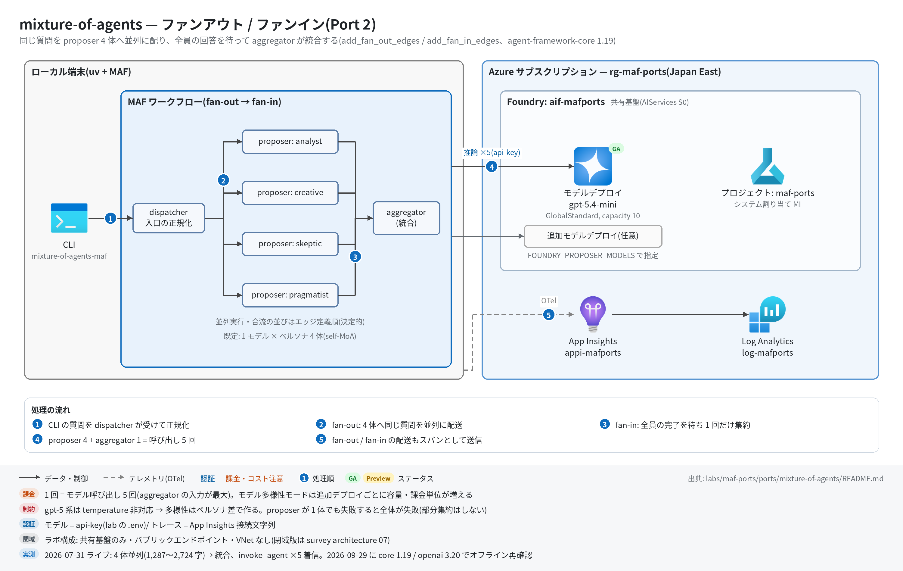

mixture-of-agents 実行ガイド
対象:
labs/maf-ports/ports/mixture-of-agents/(Port 2・パターン: ファンアウト/ファンイン — 同一質問を proposer N 体へ並列送信し、全回答を待って aggregator が統合)
最終確認: 2026-09-29 オフライン(13 passed・ruff clean・依存 agent-framework-core 1.19.0 / agent-framework-openai 1.14.4 / openai 3.20.0)/ ライブ: 2026-07-31(当時の構成 core 1.12.1 / openai 2.51.0。Azure リソースは削除済み — 再デプロイ手順は §5)
正は本 Markdown。 人間用 HTML(同じディレクトリのrunbook.html)はpython3 labs/tools/build_runbooks.pyで生成する(HTML は直接編集しない)。設計判断と移植の学びは README。
1. このパターンで確かめること
- 質問 1 つが dispatcher から proposer 4 体(既定はペルソナ analyst / creative / skeptic / pragmatist)に同時に配られ、4 体すべての完了を待ってから aggregator が 1 回だけ呼ばれ、統合回答が出ること。
- fan-in で aggregator に届く
list[ProposerReply]の並びは到着順でなくエッジ定義順(analyst → creative → skeptic → pragmatist)で決定的であること。aggregator には質問本文と proposer 名ラベル付きの回答が渡る(元アプリのカンマ結合を修正した点。README の学び 4)。 - 技術選定上の意味: MoA の本質はモデル多様性だが、Foundry では「モデルを増やす」= デプロイ作業(容量・課金単位)になる。既定の同一モデル×ペルソナ(self-MoA)は共有基盤の制約による弱い代替(README の学び 2・3)。
2. 構成

┌─▶ Proposer(analyst) ─┐
question ──▶ Dispatcher ─▶ Proposer(creative) ─┼─▶ Aggregator ──▶ MoAResult
├─▶ Proposer(skeptic) ─┤ (list[ProposerReply] を合流)
└─▶ Proposer(pragmatist) ─┘
進捗: 各 proposer の yield_output → type="intermediate"(ProposerDone)→ CLI の stderr| コンポーネント | 役割 | 課金 |
|---|---|---|
MAF Workflow(ローカル、workflow.py) |
add_fan_out_edges(dispatcher → proposer)+ add_fan_in_edges(proposer → aggregator) |
なし |
MAF Agent(agents.py) |
proposer ×4(ペルソナ)または ×N(モデル多様性モード)+ aggregator。OpenAIChatClient(Responses API)はモデルごとに 1 つを共有 |
— |
| モデルデプロイ(共有基盤、既定 gpt-5.4-mini) | 既定は全 proposer と aggregator が同じデプロイ | トークン従量(1 回の実行で 5 呼び出し) |
| 追加モデルデプロイ(任意) | モデル多様性モード用。共有基盤の Foundry アカウントに追加する(本ポートの Bicep には置かない) | トークン従量(デプロイごと) |
| App Insights(共有基盤) | OTel トレースの送信先(任意) | 取り込み量従量 |
3. 前提
| 区分 | 必要なもの | 備考 |
|---|---|---|
| ツール | uv(Python 3.11 以上。uv が取得。検証は 3.13) | オフライン実行はこれだけ |
| Azure(ライブのみ) | 共有基盤(infra/shared.bicep)のみ。モデル多様性モードでは追加のモデルデプロイ(§5.1) | トークン従量+トレース取り込み |
| 権限 | モデル呼び出しは api-key なのでデータプレーンの RBAC は不要。追加デプロイを作る場合は Foundry アカウントへの書き込み権限(共同作成者など) | roles.bicep(MI 向け)も不要 |
環境変数(labs/maf-ports/.env。雛形は .env.example。ライブ実行時のみ必要。シェルの値が .env より優先):
| 変数 | 用途 | 取得元 |
|---|---|---|
FOUNDRY_OPENAI_V1_ENDPOINT |
モデル呼び出し先。必須 | shared.bicep の出力 openaiV1Endpoint |
FOUNDRY_MODEL |
既定のモデルデプロイ名。必須 | shared.bicep の出力 modelDeploymentName |
FOUNDRY_API_KEY |
api-key 認証。必須 | az cognitiveservices account keys list -n <foundryName> -g <rg> --query key1 -o tsv |
APPLICATIONINSIGHTS_CONNECTION_STRING |
トレース送信先。任意 | shared.bicep の出力 appInsightsConnectionString |
FOUNDRY_PROPOSER_MODELS |
本ポート固有・任意。カンマ区切りのデプロイ名。2 つ以上で「1 モデル = 1 proposer」(名前は m1-<slug>、m2-<slug> …、instructions は中立)。1 つだけならそのモデルでペルソナ 4 体 |
追加したデプロイ名 |
FOUNDRY_AGGREGATOR_MODEL |
本ポート固有・任意。aggregator のデプロイ名(既定 FOUNDRY_MODEL) |
同上 |
空文字(FOUNDRY_PROPOSER_MODELS=)は「未設定」と同じ扱いで、.env の値も上書きされない。
4. オフライン実行(Azure 不要・無料)
cd labs/maf-ports/ports/mixture-of-agents
uv sync --extra dev
uv run pytest # 期待: 13 passed, 1 deselected(live は既定で除外。ネットワーク不要)
uv run ruff check . # 期待: All checks passed!(図生成スクリプト docs/architecture.py も対象)オフラインテストが固定している主な挙動:
- fan-out: 全 proposer が同じ質問で 1 回ずつ呼ばれる(
test_fan_out_calls_every_proposer_once_with_the_question) - 並列性: バリア同期(全員が開始するまで待つ fake。逐次なら 5 秒でタイムアウト)でも完走する(
test_proposers_run_concurrently) - fan-in: aggregator は 1 回だけ呼ばれ、プロンプトに質問本文と
Response from <name>ラベル付きの全回答が入る(test_fan_in_aggregator_prompt_contains_all_proposals) - 出力の並びはエッジ定義順で決定的、進捗イベントは proposer ごとに 1 件(
test_final_output_structure_and_deterministic_order/test_progress_events_one_per_proposer) - 構成ロジック: 既定はペルソナ 4 体、複数モデル指定で 1 モデル = 1 proposer(重複モデルでも名前は一意)、1 モデル指定はペルソナに戻る(
tests/test_agents_config.pyの 3 件) - 設定: カンマ区切りの空要素・前後空白を除去、空文字は既定に倒す(
test_from_env_parses_proposer_and_aggregator_models/test_from_env_defaults_when_optional_vars_empty) - proposer 0 体は
ValueErrorで組み立てを拒否(test_empty_proposers_rejected)
5. ライブ実行(Azure 必要・課金あり)
5.1 デプロイ
# 共有基盤が未作成なら先に作る(→ labs/maf-ports/infra/docs/runbook.md §5)。本ポート固有のリソースはない。
cd labs/maf-ports/ports/mixture-of-agents
az deployment group create -g <rg> -f infra/main.bicep -p baseName=<baseName> \
--query properties.outputs -o json # 任意: 共有基盤の存在確認(existing 参照+出力のみ)
# モデル多様性モードを試す場合のみ: 共有基盤の Foundry アカウントにデプロイを追加(課金単位が増える)
az cognitiveservices account list-models -n <foundryName> -g <rg> -o table # 使えるモデル・形式・版を確認
az cognitiveservices account deployment create -n <foundryName> -g <rg> \
--deployment-name <name> --model-name <model> --model-version <version> \
--model-format <OpenAI など、list-models の format> --sku-name GlobalStandard --sku-capacity 105.2 実行
uv sync --extra dev --extra live
uv run mixture-of-agents-maf "When should a team choose a monolith over microservices?"
uv run mixture-of-agents-maf --show-proposals "..." # 個別回答(## Response from <name>)も表示
uv run mixture-of-agents-maf --json "..." > moa.json # {question, proposals[], final_md}
FOUNDRY_PROPOSER_MODELS=gpt-5.4-mini,<追加デプロイ名> uv run mixture-of-agents-maf "..." # モデル多様性モード
uv run pytest -m live # ライブスモーク(4 体並列 → 集約。1 passed が期待)期待される出力の例(値は実行ごとに変わる。文字数は 2026-07-31 のライブ実測):
proposers: analyst, creative, skeptic, pragmatist ← stderr(構成の確認)
[analyst] done (1305 chars) ← stderr。完了順なので並びは毎回変わる
[pragmatist] done (1287 chars)
[skeptic] done (1630 chars)
[creative] done (2724 chars)
<統合回答の Markdown> ← stdout(final_md)--show-proposals では stdout に ## Response from analyst … ## Response from pragmatist(エッジ定義順)→ ## Aggregated response → 統合回答の順で出る。
6. 確認観点
| 確認 | # | 観点 | 確認方法 | 期待結果 |
|---|---|---|---|---|
| 1 | 正常系: 並列 4 体+集約 | §5.2 の 1 行目を実行 | stderr に proposers: analyst, creative, skeptic, pragmatist と [<name>] done が 4 行、stdout に統合回答 |
|
| 2 | 並列に動いている | §7 の時系列 KQL で invoke_agent の開始時刻と所要時間を見る |
proposer 4 体の開始時刻がほぼ同時で区間が重なり、invoke_agent aggregator は 4 体すべての終了後に始まる |
|
| 3 | fan-in の決定的な並び | --json の proposals[].proposer を複数回見比べる |
stderr の完了順が毎回変わっても、proposals は常に analyst → creative → skeptic → pragmatist |
|
| 4 | 統合の質(移植での修正点) | --show-proposals で個別回答と統合回答を読み比べる |
統合回答が 1 体のコピーでなく、複数ペルソナの観点(誤りの指摘・具体手順など)を取り込んでいる。tests/eval_dataset.jsonl の single_vs_aggregate が比較の観点 |
|
| 5 | モデル多様性モード | FOUNDRY_PROPOSER_MODELS=a,b と FOUNDRY_AGGREGATOR_MODEL=c で実行し、§7 で chat スパン名を見る |
stderr が proposers: m1-a, m2-b。chat a / chat b / chat c がそれぞれ出る(モックで振り分けを確認済み・ライブ未確認) |
|
| 6 | 異常系: proposer 1 体の失敗 | FOUNDRY_PROPOSER_MODELS=<存在するデプロイ>,nope で実行 |
全体が失敗する(404 DeploymentNotFound の ChatClientException で終了し、aggregator は動かない。部分回答での集約はしない設計 — 2026-09-29 モックで確認) |
|
| 7 | 観測: トレース着信 | §7 の件数 KQL | invoke_agent 5 件(proposer 4 + aggregator)、edge_group.process FanOutEdgeGroup / FanInEdgeGroup、executor.process proposer_<name> 4 件 |
|
| 8 | コスト | §7 のトークン集計 KQL | 1 回 = chat 5 回。aggregator の入力トークンが最大(4 回答を全部受け取るため)。モデル多様性モードは追加デプロイ分の課金が別に立つ |
|
| 9 | 後片付け | 追加デプロイの一覧 | モデル多様性モードで足したデプロイは az cognitiveservices account deployment delete -n <foundryName> -g <rg> --deployment-name <name> で消す(共有基盤ごと消すなら §8) |
7. トレース・評価の確認
# スパン名ごとの件数
az monitor app-insights query --app appi-<baseName> -g <rg> \
--analytics-query "dependencies | where timestamp > ago(30m) | summarize count() by name"
# 並列性の確認(開始時刻と所要時間。proposer 4 体の区間が重なるか)
az monitor app-insights query --app appi-<baseName> -g <rg> \
--analytics-query "dependencies | where timestamp > ago(30m) and name startswith 'invoke_agent' | project timestamp, name, duration | order by timestamp asc"
# トークン使用量(chat スパンの GenAI 属性。モデル別)
az monitor app-insights query --app appi-<baseName> -g <rg> \
--analytics-query "dependencies | where timestamp > ago(30m) and name startswith 'chat' | summarize input=sum(toint(customDimensions['gen_ai.usage.input_tokens'])), output=sum(toint(customDimensions['gen_ai.usage.output_tokens'])) by name"- 期待するスパン名(2026-09-29 に agent-framework-core 1.19.0 のインメモリ OTel で確認):
workflow.run/executor.process dispatcher|proposer_<name>|aggregator/edge_group.process FanOutEdgeGroup|FanInEdgeGroup/invoke_agent <proposer 名>|aggregator/chat <デプロイ名>/message.send。2026-07-31 のライブではinvoke_agent×5 の着信を確認済み。 - 評価:
tests/eval_dataset.jsonlは各ケースにsingle_vs_aggregate(誤情報の抑制・観点カバレッジ・数値不一致の解決・集約が割に合わない対照ケース)を記述。クラウド評価は未実装(評価 API の使い方は Port 9 critique-loop)。
8. 片付け
# モデル多様性モードで追加したデプロイだけ消す
az cognitiveservices account deployment delete -n <foundryName> -g <rg> --deployment-name <name>
# 共有基盤ごと消す
az group delete -n <rg> --yes --no-wait同じ baseName で作り直す場合の soft delete(48 時間)は 共有基盤の実行ガイド §8。
9. トラブルシューティング
| 症状 | 原因 | 対処 |
|---|---|---|
error: 環境変数が未設定: ...(終了コード 2) |
labs/maf-ports/.env がない / 変数名の誤り |
.env.example をコピーして共有基盤の出力を転記 |
ChatClientException ... 404 DeploymentNotFound |
FOUNDRY_PROPOSER_MODELS / FOUNDRY_AGGREGATOR_MODEL に存在しないデプロイ名 |
az cognitiveservices account deployment list -n <foundryName> -g <rg> -o table の名前に合わせる。1 体でも失敗すると全体が止まる |
| 429 Too Many Requests | 5 呼び出しのうち 4 つが同時に飛ぶため、容量 10K TPM だと当たりやすい | 少し待って再実行。常用するなら shared.bicep の modelCapacity を上げるか、proposer ごとに別デプロイ |
| temperature 等を足したら 400 | gpt-5 系(reasoning)モデルは temperature を受け付けない | 多様性はペルソナ(instructions)かモデル差で作る(README 学び 3) |
proposers: が想定と違う |
FOUNDRY_PROPOSER_MODELS が 1 つだけ(→ ペルソナ 4 体)、または .env の値が効いている |
2 つ以上カンマ区切りで指定。無効化はシェルで FOUNDRY_PROPOSER_MODELS= |
| KQL で 0 件 | 着信遅延 / 接続文字列未設定 / --extra live 未導入 |
数分待つ。tracing: App Insights 有効 が stderr に出ているか確認 |
10. 関連・更新履歴
- 設計判断と学び: README
- 共有基盤(デプロイ・.env・RBAC・削除): 共有基盤の実行ガイド
- モデルの選定・デプロイ種別: features/02-models.md
- 前後のパターン: trend-analysis(Port 1・逐次) / research-handoff(Port 3・handoff)
| 日付 | 内容 |
|---|---|
| 2026-09-29 | 初版。構成図を v2(日本語・処理順バッジ)に更新(依存を agent-framework-core 1.19.0 / openai 3.20.0 に更新、コード改修なし。モックで両モードの振り分け・proposer 失敗時の挙動・スパン名を確認) |